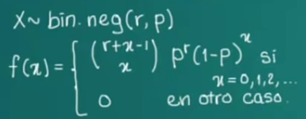

Distribucion binomial negativa
La distribucion binomial negativa es una ampliacion de las distribuciones geometricas, utilizada en procesos en los
cuales se ve necesaria la repeticion de ensayos hasta conseguir un numero de casos favorables(primer exito).
La variable aleatoria es el numero de ensayos de Bernoulli necesarios para obtener el primer exito. Si deseamos conocer el numero
de estos para conseguir r exitos, la variable aleatoria es binomial negativa.
Su funcion de probabilidad es :
